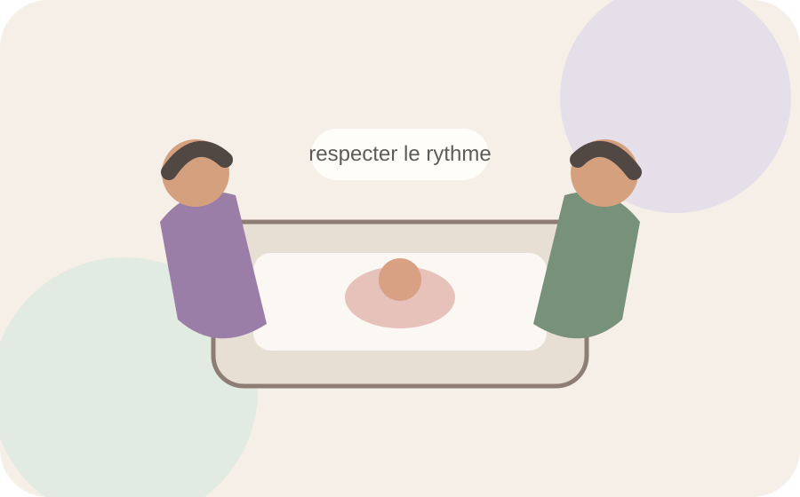

Notre mission
Une association née au cœur de la néonatologie.
À p'tits pas a été créée en 2014 à l'initiative de professionnels de la néonatologie du CHU de Bordeaux Pellegrin, avec la volonté d'améliorer le bien-être des nouveau-nés hospitalisés et de leurs familles.

Notre histoire
Une association directement liée au terrain.
L'association s'appuie sur les besoins observés au quotidien auprès des nouveau-nés hospitalisés et de leurs proches. Elle soutient des projets qui contribuent à la qualité des soins, à l'accueil des familles et au vécu de l'hospitalisation.
À p'tits pas rassemble des professionnels, des parents et des personnes souhaitant contribuer concrètement à la vie des services de néonatologie.
Depuis 2014
Des besoins du terrain vers des projets concrets.
Le principe est simple : soutenir des actions utiles aux bébés, aux parents et aux professionnels.
Nos quatre piliers
Prendre soin dans toutes ses dimensions.
Soins de développement
Contribuer à un environnement de soins attentif au rythme et aux besoins du nouveau-né.
Parentalité
Favoriser la présence des parents, le lien parent-bébé et un vécu plus humain de l'hospitalisation.
Transmission
Soutenir la formation continue et le partage des connaissances entre professionnels.
Solidarité
Transformer les dons et l'engagement collectif en projets concrets au plus près du terrain.